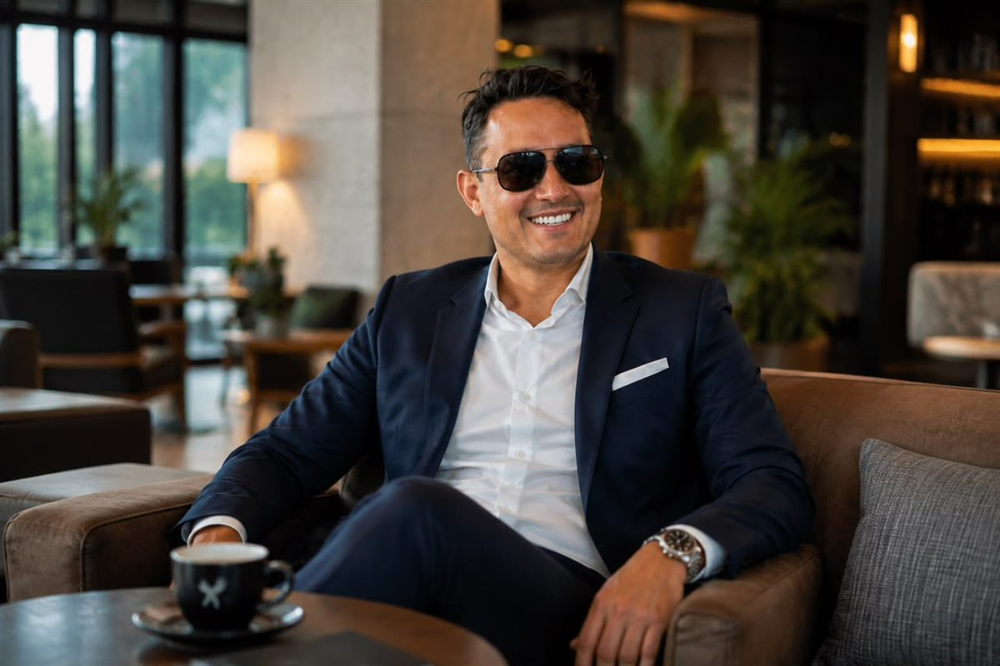

El método de Alejandro Alfredo Londoño Guerrero: planificar antes de crecer
Dos criterios se repiten en cada proceso en el que participa: planificación y constancia. No son consignas: se traducen en decisiones concretas sobre comunicación, canales y operación.

Hay una manera de dirigir que se reconoce menos por lo que anuncia que por el orden en el que hace las cosas. Alejandro Alfredo Londoño Guerrero participa en dos procesos empresariales simultáneos —la consolidación de marca de LONDINGHANM y la expansión nacional de KEMONY— y en ambos el punto de partida es el mismo: entender antes de ampliar.
Primero, comprender al público
En el caso de LONDINGHANM, la premisa es explícita. Tener presencia en redes sociales no garantiza posicionamiento. Para construir una marca es necesario definir qué se quiere comunicar, a quién se dirige la propuesta y qué experiencia se desea ofrecer.
Esa distinción ordena el resto del trabajo. La firma trabaja en convertir sus plataformas en canales coherentes, donde el contenido, la imagen y la atención respondan a una misma dirección, en lugar de tratarlas como piezas sueltas.
Después, ordenar la operación
En KEMONY el mismo criterio se aplica sobre otro terreno. La expansión no se limita a incrementar la cantidad de puntos de venta: contempla el fortalecimiento de procesos internos, la mejora de la logística, la coordinación entre las distintas áreas operativas y mecanismos que permitan sostener el crecimiento de forma organizada.
Los criterios que se repiten
- Comprender al público antes de dirigirse a él
- Integrar comunicación, producto y operación bajo una visión común
- Sostener las acciones en el tiempo, no concentrarlas en un lanzamiento
- Cumplir los tiempos de entrega y los estándares de calidad
- Mantener comunicación permanente con socios y distribuidores

Y por último, sostenerlo
La constancia es el segundo criterio, y probablemente el más difícil de ejecutar. El posicionamiento no se construye con una publicación aislada, sino con una secuencia de acciones que permitan al público reconocer, recordar y confiar en la marca.
Aplicado al día a día, eso significa acciones sostenidas que generen cercanía y confianza, y una relación duradera con los clientes. Es un trabajo poco espectacular y de resultados lentos, que es exactamente lo que lo distingue de una campaña.
Discusión
El orden que describe el artículo —entender, ordenar, sostener— es sencillo de enunciar y durísimo de cumplir. La mayoría empieza por el tercer paso.
Que el mismo método se aplique en moda y en alimentación es lo que le da credibilidad. No es una receta sectorial.